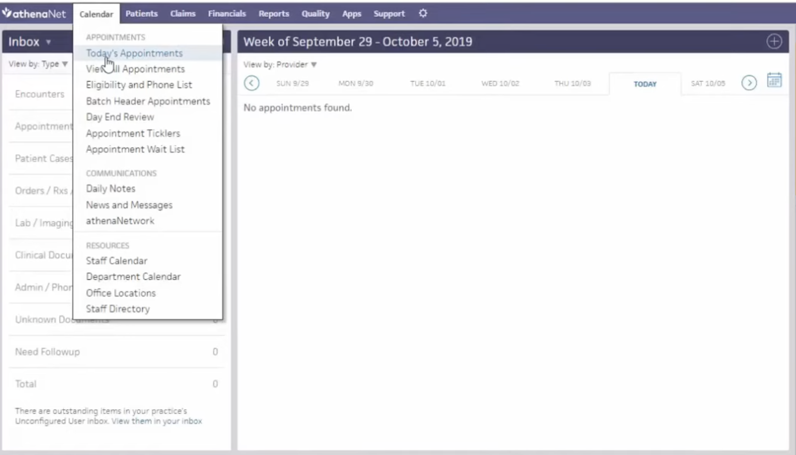
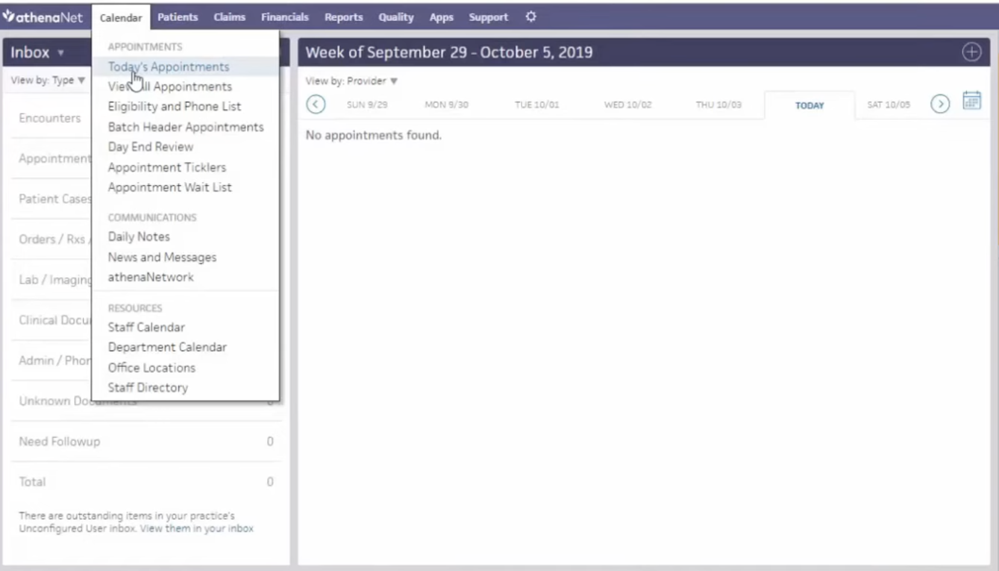
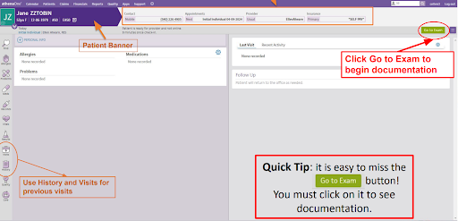
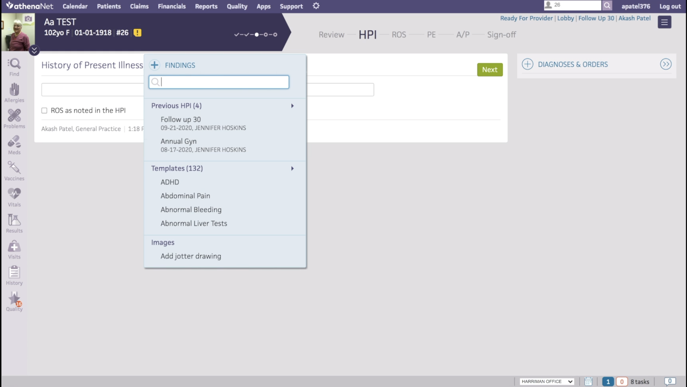
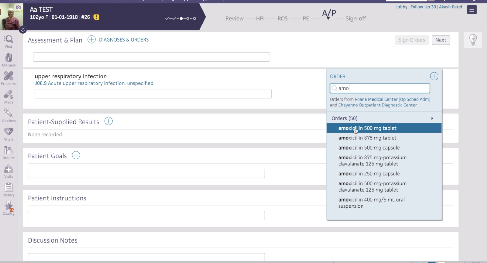

The Corner uses athenahealthOne as its primary Emergency Health Record (EHR). This EHR is much more simplistic than Epic, but slightly less intuitive. In this section, you will find some tips and tricks to navigate the EHR.
On your first day, you will need to set up an account with Athena at the front desk. The staff at the front will help you to set up a username and password. This is an online EHR that can be accessed from anywhere (inside or outside) the clinic, from your school or personal computer.
After logging in, select 'Corner Health Center' as the department.
To view your schedule, click on "Calendar" in the tool bar and select "Today's appointments". Then adjust the date as appropriate to scroll down and see the panel of all the physicians that are scheduled that day.
 

When a patient arrives, they will check in, which initiates the visit. Once the patient is roomed and their vitals are recorded, this will be reflected in the EHR by the highlighted name on the schedule turning blue. This portion is called the intake. Once the MA has finished with the intake, the name will change from blue to green. Once the name is green, you can enter the patient chart and click the green button in the top right hand corner that says "Go to Exam".
This will take you to a new page with sections labeled for HPI, ROS, physical exam, and assessment and plan.
 At the end of an encounter, you will write an assessment and plan. To add a problem, click on "+ diagnosis" at the top of the page. You can then add further description in the appropriate text box.

To add new medications, click on the '+' next to the problem that you created/diagnosis that you added.
As a student you are able to pend orders, but not sign them. To pend an order, use the '+' sign described above and search for the lab or medication. Once you add the order it is automatically pended, do not click "sign orders".
Once pended, notify your preceptor so that they can enter the system and sign the orders. Two people cannot edit the A&P at the same time, so it works best for you to exit this section of the chart while they are signing the orders.
Internal referrals refer to referrals placed to departments within Corner Health Clinic. The following departments may be referred to:
Here are step-by-step instructions to place an internal referral:
Sender: Clinical staff
Provider: The writing provider will automatically prepopulate based on your login
Subject: counseling/housing/nutrition
Description: 21 yo with…
Data entry completed
Click save
Next, re-enter the patient case and select the proper delivery
Counseling = SWOD
Nursing = any nurse
Nutrition = Kate Share